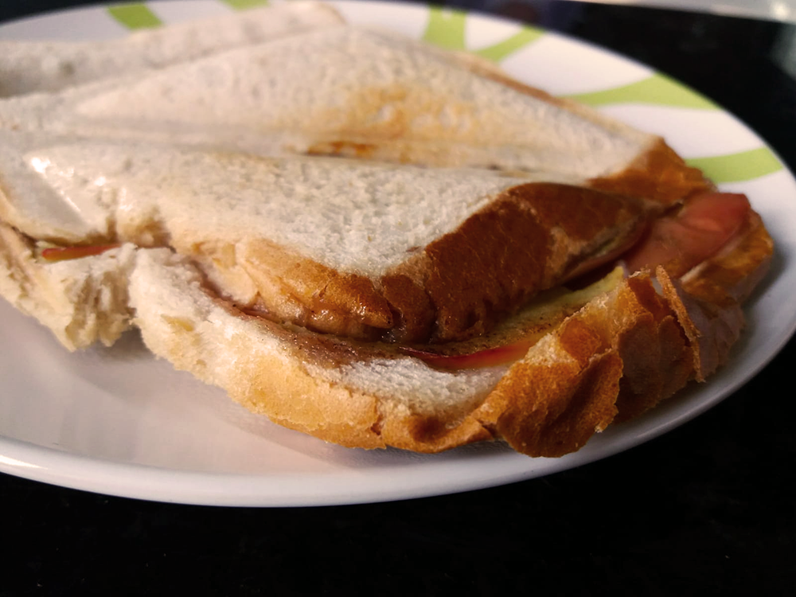

appeltosti

Bereidingsduur: 10 minuten
Aantal personen: 2
Instructies:
1. Schil de appel en snijd deze in schijfjes.
2. Leg de schijfjes op de sneetjes boterham en verdeel de kaneel hierover heen. Leg de andere sneetjes hierover heen en leg het geheel in het tosti apparaat. Even wachten en klaar!
1. Schil de appel en snijd deze in schijfjes.
2. Leg de schijfjes op de sneetjes boterham en verdeel de kaneel hierover heen. Leg de andere sneetjes hierover heen en leg het geheel in het tosti apparaat. Even wachten en klaar!
Tip: ook heerlijk met banaan in plaats van appel!